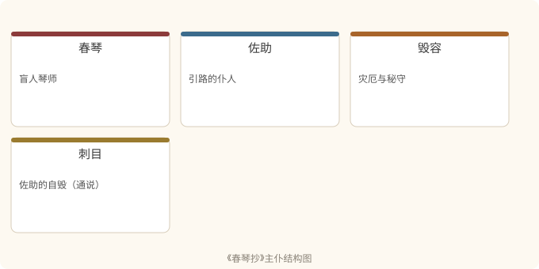

春琴抄
一、基本信息
| 作者 | 谷崎润一郎 |
|---|---|
| 成书/出版 | 1933年（作者页 B168 口径：春琴抄（1933）） Junichiro Tanizaki — Encyclopaedia Britannica（百科全书） |
| 国别/地区 | 日本 |
| 时代 | 现当代 · 20世纪 |
| 体裁 | 中篇小说 |
| 语言 | 日语 |

《春琴抄》主仆结构图（主题·结构图）
二、创作背景
作者页（B168）：谷崎润一郎 major_works 载'春琴抄（1933）、卍（1929）'（B168 作者页定位，详见 xixue 条核对）。
题材（通说）：大阪盲人琴师春琴与仆人佐助——主仆的畸恋与毁容的忠诚。
三、内容脉络
春琴习三味线、脾气骄纵；佐助为其引路、终生侍奉（通说待核）。
春琴被毁容——佐助自刺双目以'同盲'（通说待核）。
四、主要人物表
| 人物 | 身份 | 说明 |
|---|---|---|
| 春琴 | 琴师 | 骄纵的盲人（通说待核） |
| 佐助 | 仆人 | 自毁式的忠诚（通说待核） |
五、主题与艺术特点
- 美与残缺的崇拜（通说——谷崎美学）。
- 主仆之爱的不对等（通说）。
- '女性崇拜'与'恶魔主义'（通说待核）。
六、影响与评论
- 作者页：谷崎代表作（B168 作者页口径）。
Junichiro Tanizaki — Encyclopaedia Britannica（百科全书） - 1954年等多次电影改编（通说待核）。
Junichiro Tanizaki — Encyclopaedia Britannica（百科全书）
七、阅读建议
难点
- '实录体'的转述结构。
- 大阪商人社会。
- 《春琴抄》（上海译文出版社，通说待核）。
- 日文原版（新潮文库）。
先《细雪》后本作。
八、待核实
- 1933年（《中央公论》说）核对。
- 春琴/佐助人名核对。
- '实录体'（鷺泽左吉的传述）结构待核。
本页主要来源
谷崎润一郎的其他收录作品：细雪